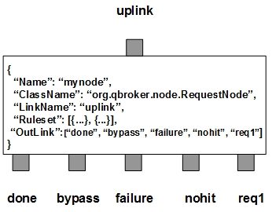

RequestNode picks up JMS messages as requests or their async responses from the uplink and processes them according to their content and the pre-defined rulesets. There are four fixed outlinks, done, bypass, failure, and nohit, as well as the request outlink for collectiables. For a request message, RequestNode routes it to the request outlink first. Once the message is collected from the outlink, it will be cached with a unique key waiting for the asynchonous reply. When a response message finally arrives, RequestNode extracts the unique key from it and looks for the corresponding request message from the cache. If the request message is found, RequestNode loads the response to the request message and routes it to the outlink of done. The response message will be routed to the outlink of bypass afterwards. This is called that the request message has been claimed by its response. If there is no corresponding request found for the response message, it will be routed to the outlink of nohit. In case that a cached key has expired, its request message will be flushed to the outlink of failure. Eventually, all the claimed keys or expired keys will be removed from the cache. If an incoming message is neither a request nor a response, RequestNode will treat it as a bypass and routes it to one of the four fixed outlinks without any delay. Since RequestNode does not consume any message, any incoming message has to find a way out via one of the four fixed outlinks.
RequestNode contains a number of pre-defined rulesets. These rulesets categorize messages into non-overlapping groups. Therefore, each rule defines a unique message group. The ruleset also defines the cache or claim options for the messages in each group as well as the other parameters used in the process. Furthermore, RequestNode always creates one extra ruleset, nohit. The ruleset of nohit is for all the messages not hitting any of the filters.
You are free to choose any names for the first four fixed outlinks. But RequestNodee always assumes the first outlink for done, the second for bypass, the third for failure and the fourth for nohit. The rest of the outlinks are for collectibles. It is OK for those first four fixed outlinks to share the same name. Please make sure the first fixed outlink has the actual capacity no less than that of the uplink.
Apart from the common properties, there are some implementation specific properties for RequestNode.
| Property Name | Data Type | Requirement | Description | Examples |
|---|---|---|---|---|
| Heartbeat | integer | optional | frequency in second to run a sanity check on pending requests | 60 (default: 30) |
The request operation is executed via the pre-defined rulesets. Therefore, the configuration of the rulesets is critical to the operations of RequestNode. Here are complete properties of rulesets for RequestNode.
| Property Name | Data Type | Requirement | Description | Examples |
|---|---|---|---|---|
| Name | alphanumeric with no spaces | mandatory | name of the ruleset | event |
| PreferredOutLink | alphanumeric with no spaces | mandatory | name of the preferred outlink | query |
| RuleType | string | mandatory for replies | for responses only | reply |
| FieldName | string | optional | name of the property to be formatted as the request | url |
| ReplyQTemplate | string | optional | template to build the request | http://##hostname## |
| ReplyQSubstitution | string | optional | text subsctitution on the request | s/^0// |
| TimeToLive | integer | optional | seconds to expire the cache items | |
| KeyTemplate | string | optional | template for the cache key | ##Count## |
| KeySubstitution | string | optional | text subsctitution for the cache key | s/^0// |
| FormatterArgument | list | optional | list of post format operations | see example |
| JMSPropertyGroup | list | optional | list of pattern groups on properties to select messages | see example |
| XJMSPropertyGroup | list | optional | list of pattern groups on properties to exclude messages | see example |
| PatternGroup | list | optional | list of pattern groups on body to select messages | see example |
| XPatternGroup | list | optional | list of pattern groups on body to exclude messages | see example |
| StringProperty | map | optional | for setting message properties on its final exit | see example |
{
..
"Ruleset": [{
"Name": "bypass",
"PreferredOutLink": "done",
"JMSPropertyGroup": [{
"JMSType": "^score$"
}]
}],
...
}
where it sends the messages to the outlink of done without processing them.
Here is an example of RequestNode:
{
"Name": "node_request",
"ClassName": "org.qbroker.node.RequestNode",
"Description": "for async requests",
"Operation": "request",
"LinkName": "request",
"Capacity": "32",
"DisplayMask": "0",
"XAMode": "1",
"Debug": "31",
"Ruleset": [{
"Name": "query",
"PreferredOutLink": "auth",
"RequestType": "jdbc",
"JMSPropertyGroup": [{
"operation": "."
}],
"PatternGroup": [{
"Pattern": ["^SELECT "]
}],
"TimeToLive": "1800",
"KeyTemplate": "##body##"
},{
"Name": "update",
"PreferredOutLink": "auth",
"RequestType": "jdbc",
"TargetRule": "query",
"JMSPropertyGroup": [{
"operation": ".",
"SQL": "^(INSERT|UPDATE|DELETE) "
}],
"KeyTemplate": "##SQL##"
},{
"Name": "static",
"PreferredOutLink": "done",
"JMSPropertyGroup": [{
"pubURI": "."
}],
"KeyTemplate": "##pubURI##",
"StaticCache": {
"fluit-1": "apple",
"fluit-2": "orange",
"fluit-3": "grape",
"fluit-4": "kiwi"
}
}],
"OutLink": [
{
"Name": "done",
"Capacity": "48",
"Partition": "40,8"
},{
"Name": "bypass",
"Capacity": "48",
"Partition": "36,4"
},{
"Name": "failure",
"Capacity": "48",
"Partition": "36,4"
},{
"Name": "nohit",
"Capacity": "32",
"Partition": "0,4"
},
"queue"
]
}
where there are two rulesets, one for requests and the other for responses.